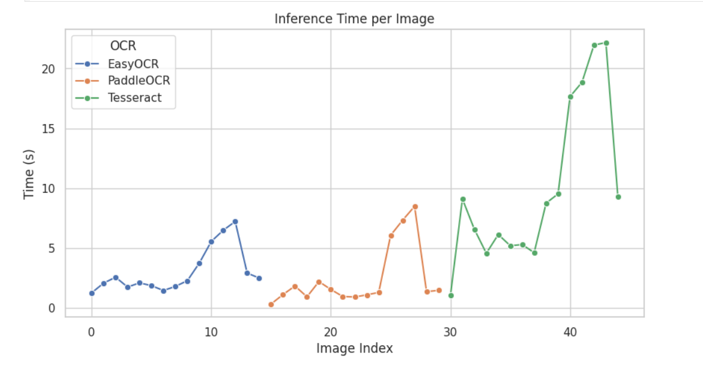
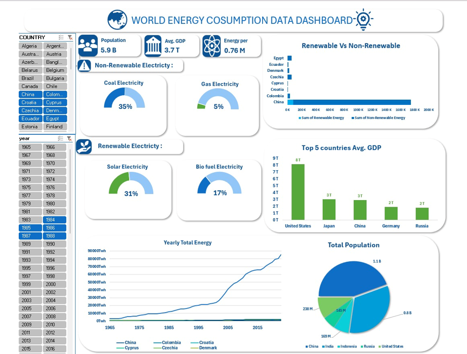
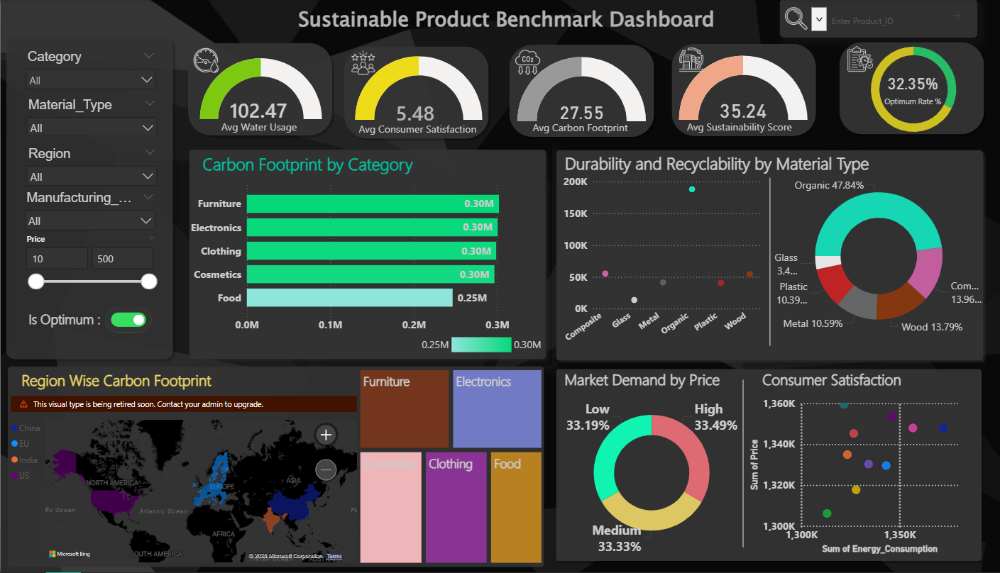

B.Tech Computer Science & Engineering · LPU, Punjab
|
Data Science & ML enthusiast who turns messy datasets into meaningful insights. I build OCR pipelines, analytics dashboards, and everything in between.
Who I Am
Hi! I'm Gokul, a Computer Science & Engineering undergraduate at Lovely Professional University, Punjab. I'm passionate about Data Science, Machine Learning, and building systems that extract real value from raw data.
My work spans from engineering OCR pipelines that cut Word Error Rate by 20%, to architecting ETL-powered analytics dashboards that bring global energy trends to life. I don't just write code — I solve problems with measurable impact. Along the way I earned a HackerRank **Gold Badge in Java**, solving advanced challenges that honed my OOP and algorithmic skills.
I'm driven by curiosity and ownership. Whether it's a 36-hour hackathon or a semester-long project, I give it everything. Currently seeking internship opportunities where I can contribute, learn, and grow fast.
What I Know
A toolkit I've built through projects, internships, and relentless learning.
What I've Built
Selected work with real-world impact and technical depth.

GitHub ↗
GitHub ↗
GitHub ↗Verified Learning
Industry-recognized credentials that validate my expertise.
Academic Background
Building a strong foundation across engineering, science, and mathematics.
Get in Touch
Feel free to reach out via email or phone. I'm open to collaborations and opportunities.